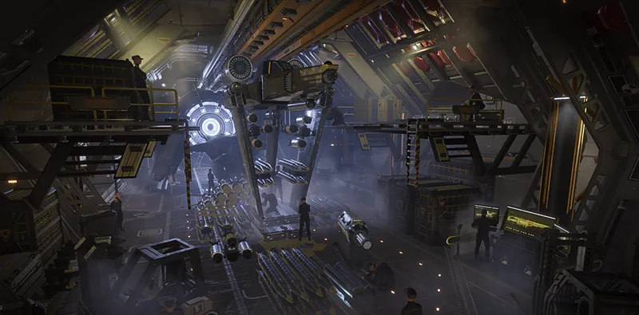

高级船员训练

“Trains pit crew members to employ situational protocol adaptations, such as leaving unused 弹药 loaded instead of replacing it.
— 舰船管理终端
高级船员训练 is a Tier 5 舰船模块 升级 for the Hangar.
升级效果
重新武装“飞鹰” 冷却 further 已降低 by 10% if called in while Eagle 使用次数 still remain.
要求
- XXL号武器舱
 200 Common Sample
200 Common Sample 250 Rare Sample
250 Rare Sample 20 Super Sample
20 Super Sample 30,000 申购点 Slips
30,000 申购点 Slips
受影响的战略配备
变更历史
补丁
描述
1.000.404
2024-07-04
已加入游戏。